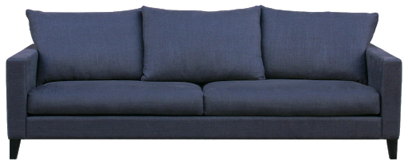
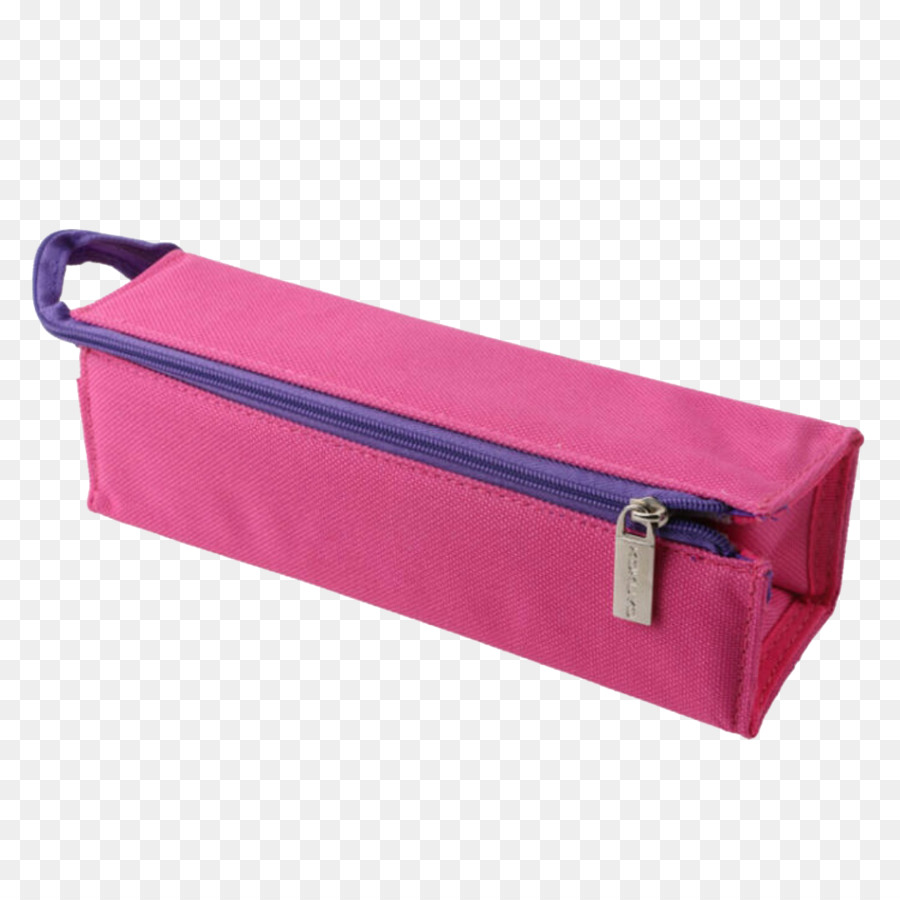
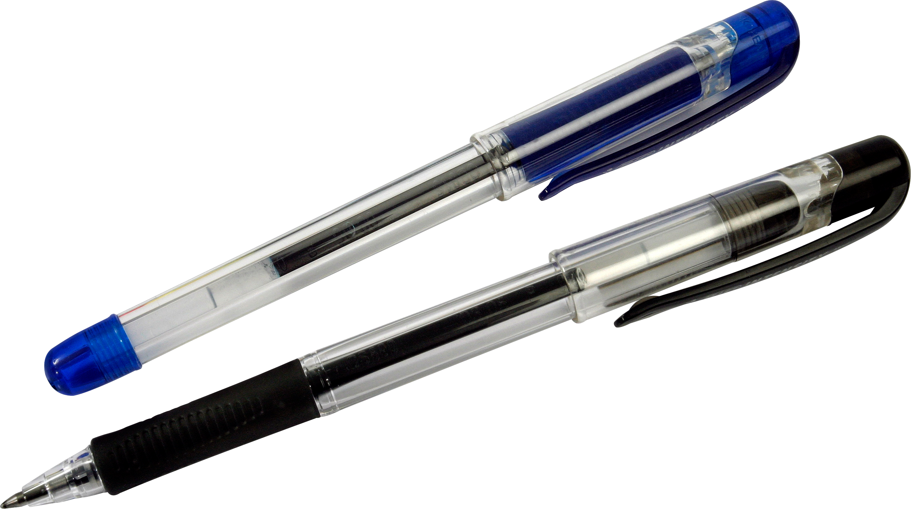
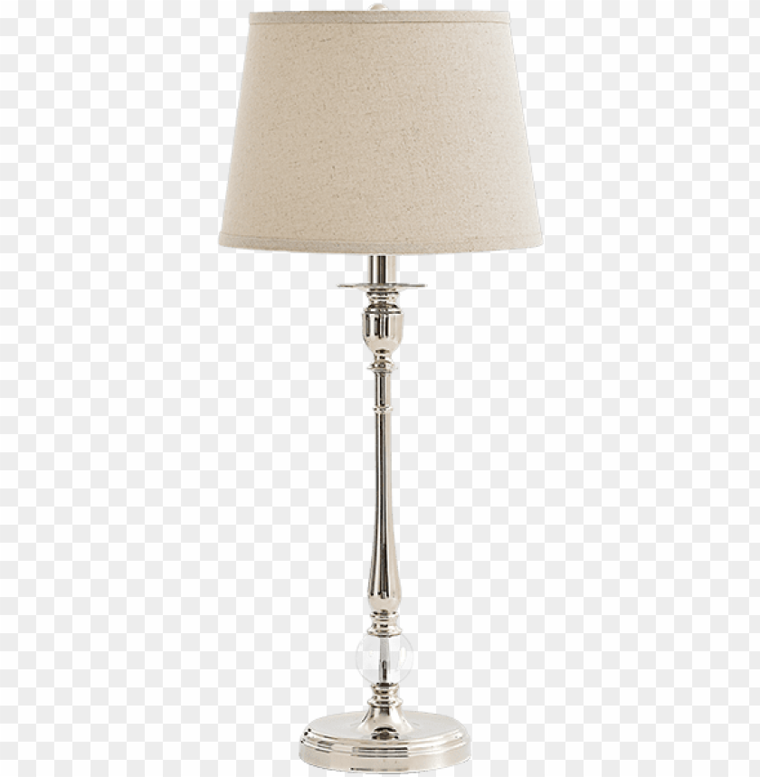
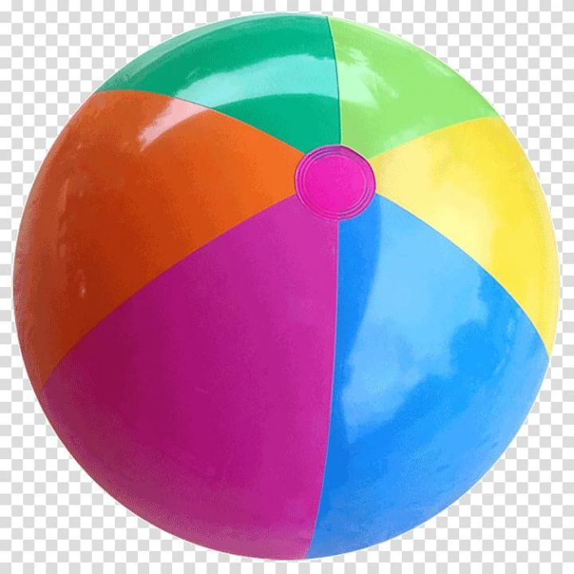

Let's see which is more accurate when it comes to identifying images...
Neither is correct

Mobilenet is more accurate

Neither is correct

Neither is correct

Wolfram
Wolfram is somewhat more accurate
Wolfram

Neither is correct
According to my case study which had 8 images/objects,neither was correct in four objects,
3 correct by Wolfram, and 1 by Mobilenet so I conclude that Wolfram is more accurate than Mobilenet.